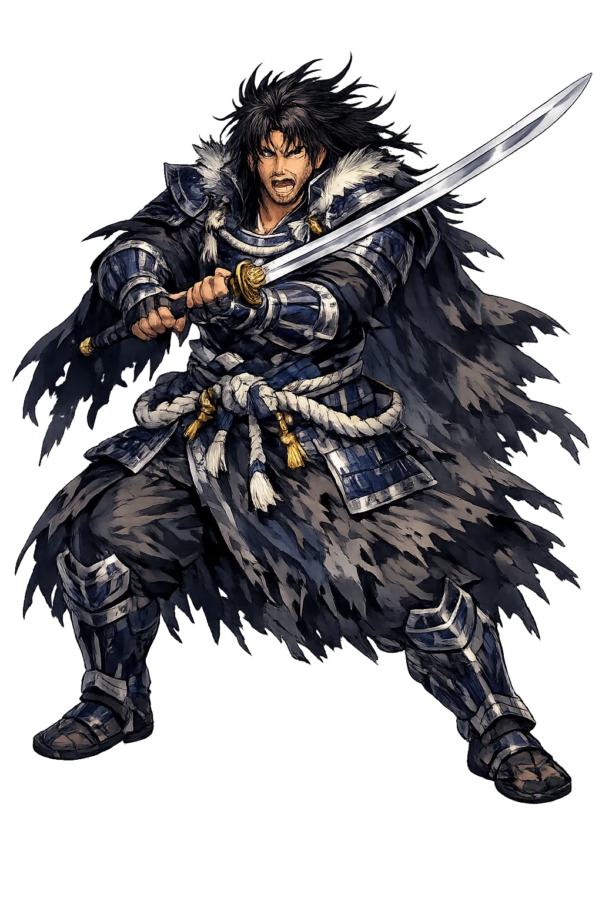
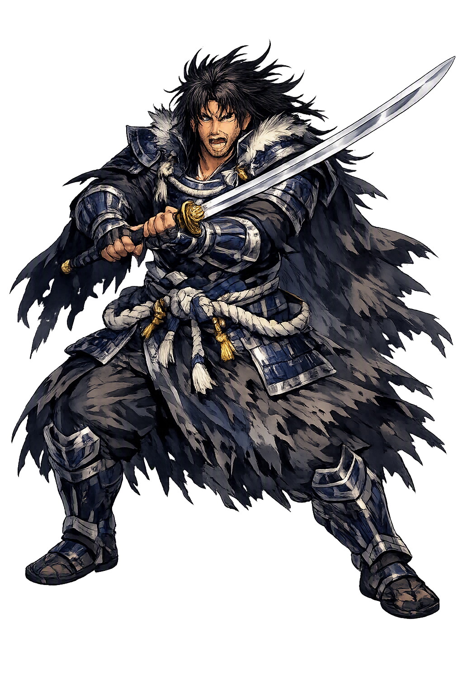

Stories of Susanō
Susanoo's cycle in the Kojiki and Nihon Shoki runs from cosmic vandal to culture hero: expelled from heaven, he conquers the dragon of chaos and founds a kingdom in song — the most humanly told arc of any Japanese deity.
When Izanagi purified himself after his flight from Yomi, Amaterasu was born from his left eye and Tsukuyomi from his right; from his nose came Susanoo, whose name the Kojiki writes 須佐之男 and glosses as the swift, impetuous male deity. Izanagi charged him with rule of the sea. But Susanoo never ceased weeping for his dead mother, crying so hard that the mountains withered and the rivers dried. Exasperated, Izanagi expelled him: 'If that is your wish, go to the land of your mother, then' (Kojiki 1). The storm god is thus the grieving child of creation, defined from birth by a longing for what cannot be retrieved — the sea he was given to rule is, after all, the element his father had fled into to escape death.
Climbing to heaven to bid his sister farewell, Susanoo alarmed Amaterasu, who went out armed; he protested his innocence and proposed an ukei, a covenant of sincerity, exchanging ornaments so that she bore three goddesses from his sword and he five gods from her necklace (Kojiki 1). The test cleared him — and he repaid it by trampling down the ridges of her rice-fields, filling the ditches, and flaying the heavenly piebald horse, whose carcass he hurled through the roof of her weaving hall, killing the maiden within. Amaterasu fled into the rock cave and sealed the door. Every one of his crimes strikes at cultivation — field, ditch, loom — the arts by which heaven imposes order on nature. Susanoo's rage is the sacred vandalism of the untamed.
Banned from heaven, Susanoo descended to Izumo, where he found the old couple Ashinazuchi and Tenazuchi weeping beside their eighth daughter: each year the serpent Yamata no Orochi — eight heads, eight tails, cedars growing on its back, its body spanning eight valleys — had devoured one of their daughters, and Kushinadahime alone remained. Susanoo transformed the girl into a comb, hid her in his hair, and had the parents brew eight vats of eightfold-refined sake. The serpent drank all eight, fell into a stupor, and Susanoo cut it apart (Kojiki 1). In its tail his blade struck something hard: a great sword, which he named Ame-no-Murakumo, Gathering-of-Clouds, and presented to Amaterasu in atonement — the blade later generations call Kusanagi, one of the Three Imperial Regalia. The myth tames chaos not by greater force but by appetite itself: the monster is destroyed by the one thing it could not refuse.
After the slaying, Susanoo felt his spirit suddenly clear — suga, refreshed — and on that spot in Izumo he built a palace and married Kushinadahime. Pacing its length, he composed what the Kojiki presents as his own song: 'The many-fenced palace of Suga, ah! That cloud-rising, many-fenced palace of mine!' — counted among the earliest verses in the chronicle and remembered as the foundation of Izumo's sacred landscape. The shrine that marks the site, Suga Jinja, still stands within the orbit of the Izumo tradition, and the verse he sang there is counted among the oldest human voices in Japanese literature. The storm god, having destroyed heaven's order, founds his own in song and marriage: violence converts to culture at the moment it ceases to rage — and the proof is a poem, not a sword.
The Nihon Shoki adds a stranger chapter. Expelled and unkempt, Susanoo wandered as a beggar and asked lodging of two brothers: the wealthy one refused him, but the poor Somin Shōrai bathed him with sake in eight tubs and fed him well. In gratitude the god gave Somin a charm cut from a mulberry bough: hang this at your gate, and pestilence will pass your house by. The promise held, and the Somin charm became the ancestor of the epidemic-warding talisman-papers hung at gates in Kyōto and across Japan — the same charm-papers still distributed at the Gion cult's shrines today. Behind the terror of the storm stands an old cultic logic: the dangerous god is also the god who protects, and his protection is won by generosity to the stranger at the door.
Storms, Sea, Chaos
Susanoo is the storm god of Japanese myth — impetuous weeper, vandal of heaven, and slayer of the eight-headed serpent. Brother of the sun and the moon, he embodies the chaos that must be expelled for order to shine, yet also the heroic force that rescues the land's last daughter. His biography moves from expulsion to settlement: the destroyer of heaven becomes the founder of Izumo.
Thunder, wind, and raging sea made flesh; his weeping shakes mountains and dries rivers.
His name is glossed 'swift, impetuous male deity'; the impetuosity is at once his crime and his heroic energy.
The macron over Susanō recovers the long final vowel that plain ASCII susanoo flattens.
Written 須佐之男命 in the Kojiki and Nihon Shoki — 'His Augustness Swift-Impetuous-Male.'
From the original script to the living URL
須佐之男命
The name in its original Japanese form. Susanō (須佐之男命) is attested in the source tradition — “Swift impetuous male deity; the Shinto storm god”. Its macron-length vowels carry the full phonetic and orthographic weight of the source tradition.
susanoo
Reduced to plain susanoo, the name loses everything that made it specific: macron-length vowels. What remains is an ASCII string that machines can parse but that no longer speaks with its original voice.
Susanō
The Unicode restoration recovers what ASCII flattened. Susanō restores macron-length vowels, returning the name to its original written dignity. The domain encodes to Punycode, but the browser displays the truth.
Susanō.com → xn--susan-k9a.com
The non-ASCII characters in Susanō are encoded while the ASCII remains visible. To the DNS, it is Punycode. To humanity, it is Susanō.
Owned, ideal, and ASCII forms of Susanō
Susanō
Restores 須佐之男命. The live temple domain — susanō.com.
susanoo
Flattens 須佐之男命. The plain ASCII fallback — what DNS and legacy systems see.
How Susanō was spoken
How Susanō is preserved in writing
A bespoke provenance study for Susanō is being prepared by the PUNICODEX scholarly team.
Contribute scholarly provenance →Susanoo is the necessary outlaw. Heaven could not keep him, yet heaven needed what only he could do — pull a sword from the tail of chaos and found a palace where his spirit cleared. His biography reads like an argument about untamed energy: grief that floods rivers, rage that tramples rice-fields, courage that faces an eight-headed monster with eight vats of sake.
Enter Extended Lore